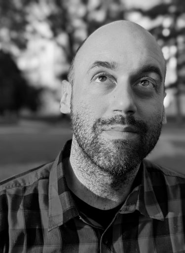

All things tech blog
About me
Rođen u Požarevcu, odrastao u Rabrovu, trenutno u Beogradu. Zaljubljen u IT, muziku i domaću hranu odmalena. Oduvek imao nepresušnu energiju i kreativnost, ali takođe i lenjost i manjak discipline da ostvari sve o čemu mašta. Ali to me ne sprečava da istražujem i otkrivam nove stvari, ako vam zvuči interesantno da me čitate, pratite moje postove o svemu što je IT.
Preko 5 godina iskustva u tehničkoj podršci, a iskustvo sa kompjuterima (hardverom) ceo život.
